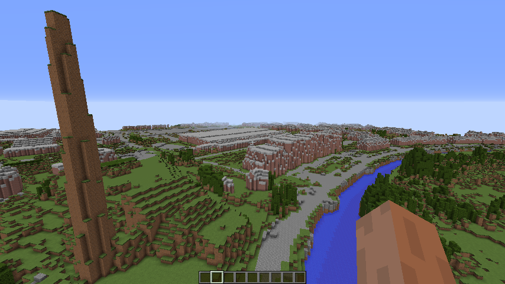
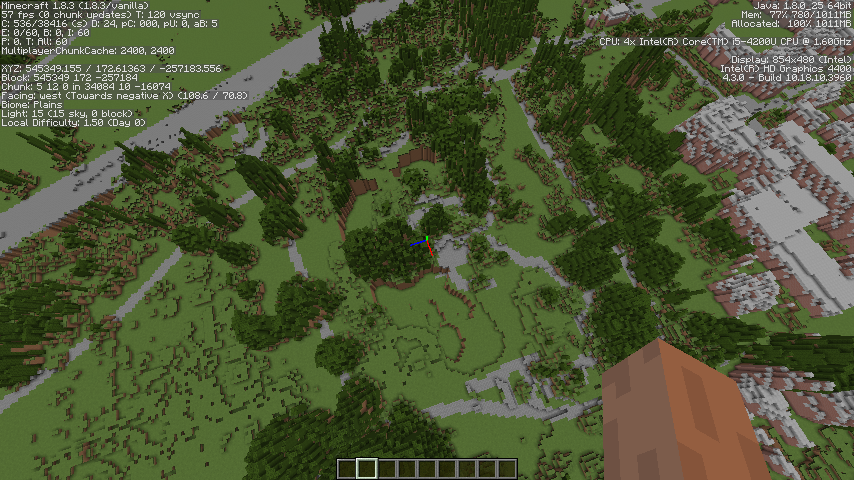
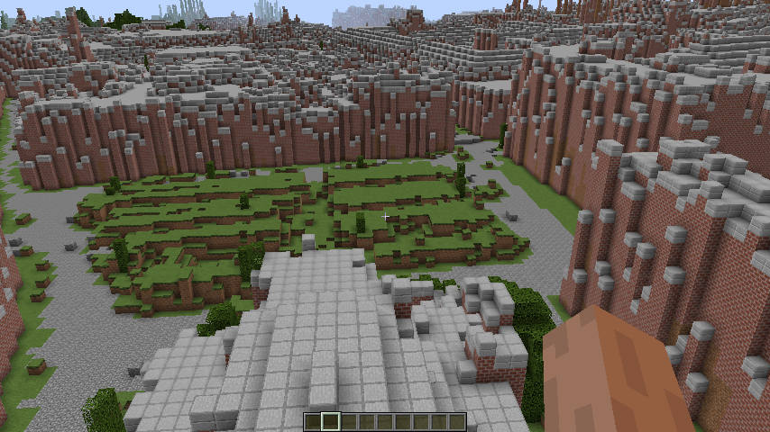
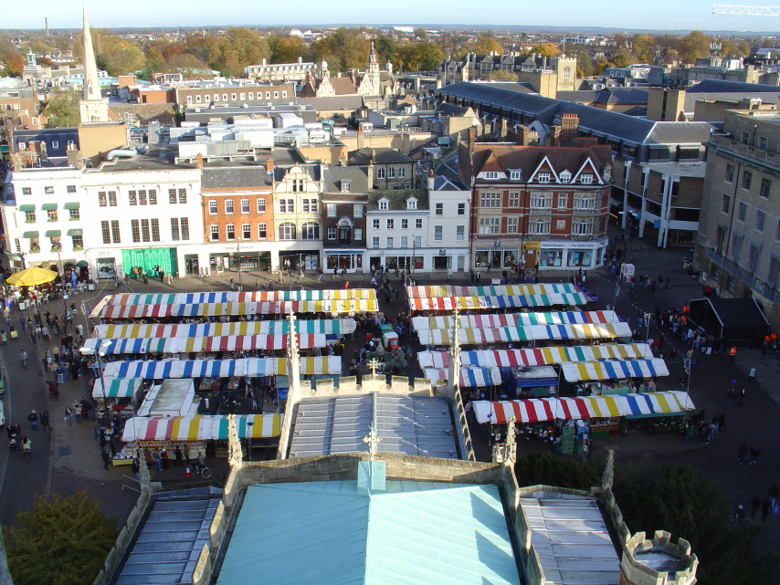
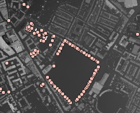

Ways you can help
1. Spot the difference - Tell us what's wrong with the map
Find something that isn't quite right. Then take a picture and let us know via one of the following:
- send it to minecraft@collusion.org.uk
- tweet with hashtag #minecraft_cambridge
- raise an issue on GitHub
/tp 546488 100 -259374The museum of technology isn't made of mud and bare grass!

/tp 545349 172 -257184Water missing from the lakes in the Botanic Gardens (and lake too deep?)

If you have a photo of what it should look like then even better:
/tp 544835 100 -258459
View of the market from Great St Mary's looks like this: 
but should be more like this: 
2. Share your ideas for improving the world
Our project needs:
"Urban foresters"
We've done a reasonable job of identifying trees but not a very good job so far of rendering them (earth for tree trunks is rubbish). I had a few ideas about trees:
- Get the GPS trackers out and plot the significant trees on OSM. Some are there already:  There are also some other tree mapping initiatives out there such as http://www.treezilla.org/ and the Woodland Trust's Ancient Tree Hunt website (good content on an appropriately ancient web site). Also the City council probably has its tree preservation orders mapped so could release that as Open Data. If the trees are mapped then a script could be written to replace the tree LIDAR height data with an appropriate Minecraft tree such as those in lentebriesje's custom tree repository
- Do some more work processing on the LIDAR data to guess the trunk locations.
- Where an area is wooded use a custom layer of trees in WorldPainter that broadly matches the density of the LIDAR data
"Civil Engineers"
To include the railway, airport and improve the rendering of streets and paths from OSM data. Broadly speaking roads are currently rendered as 15 metres wide and paths/cycleways 3 metres. If you know your way around OpenStreetMap you can probably help refine this. I'm not sure I got my filters right..
"Construction workers"
I always planned to write some code to hollow out the buildings. This could be done by customising WorldPainter or writing a script (perhaps for MCEdit). I'll probably put a coding challenge up for this. Also so much building work has gone on in recent years that many newer builds are missing. So these need to be identified and added one way or another (see missing data). As it stands it is an interesting 3D snapshot of a rapidly changing cityscape. At street level the buildings are very abstract. I'd like to try some street-level LIDAR to improve this. Any thoughts in this area appreciated. If only I could borrow a LIDAR sensor from my local library for a couple of weeks..
"Water managers"
Identifying all the waterways and making sure the water is where it is supposed to be in the minecraft world. Also -any flood and water management experts to help assess whether the minecraft world can help us tell a story about flooding and water.
"Bridge builders"
I think we can identify and hollow out the bridges in code but making them look nice might need to be done in game.
A solution for missing data
Where the LIDAR data is incomplete a few options spring to mind:
- Borrow the Vizicities approach and render the buildings from OSM data (and contribute crowd sourced building height data to OSM)
- Find someone with a LIDAR sensor
- Find a pilot with an aircraft and stick a LIDAR sensor on it
- Find a someone with a drone/quadcopter and stick a LIDAR sensor on it
Raspberry Pi
I am sure we can get Minecraft Cambridge working on the PI. If you can help with that then let us know.
Coding clubs
If you are involved in a coding club and think you can use Minecraft-Cambridge then get in touch.
Gamers
We made a model in Minecraft - but we didn't make a game. There are no resources under the map and at ground level everything is a bit confusing. So ideas on how to make a playable city.
Competitors and Colluders
The point of the prototype is that it should scale (at least in the UK). So if you aren't in Cambridge you should be able to follow the steps we took (to be published shortly).
You
If you want to be involved contact us at minecraft@collusion.org.uk

Minecraft Cambridge by Collusion Maker Challenge Team 2 is licensed under a Creative Commons Attribution-NonCommercial-ShareAlike 4.0 International License.
Based on works at http://data.gov.uk/dataset/lidar-digital-surface-model and OpenStreetMap .
Permissions beyond the scope of this license may be available at https://www.geomatics-group.co.uk/GeoCMS/Homepage.aspx.